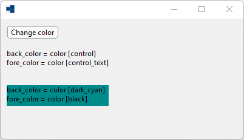
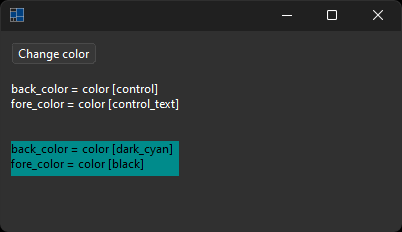
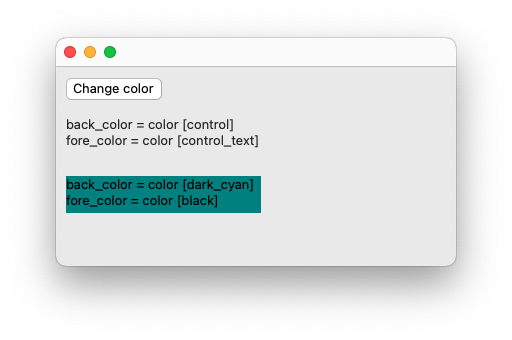
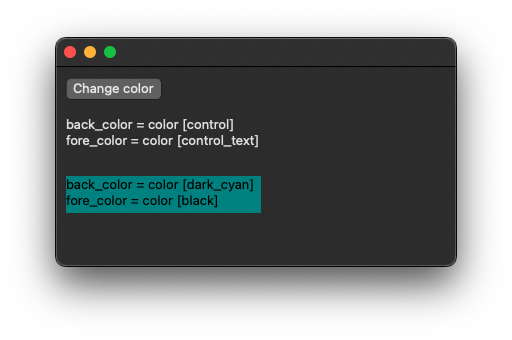
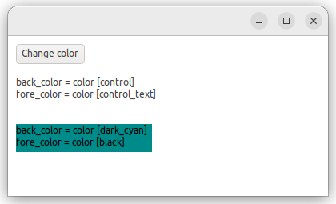

|
xtd
0.2.0
|
Loading...
Searching...
No Matches
change_color.cpp
demonstrates the use of xtd::forms::control back_color and fore_color properties.
- Windows
- 

- macOS
- 

- Gnome
- 

#include <xtd/forms/application>
#include <xtd/forms/button>
#include <xtd/forms/form>
#include <xtd/forms/label>
#include <xtd/random>
using namespace xtd;
using namespace xtd::drawing;
using namespace xtd::forms;
public:
form1() {
controls().push_back_range({change_color_button, label1, label2});
client_size({400, 200});
change_color_button.location({10, 10});
change_color_button.text("Change color");
change_color_button.click += [&] {
back_color(color::from_argb(rand.next<unsigned char>(), rand.next<unsigned char>(), rand.next<unsigned char>()));
fore_color(color::from_argb(rand.next<unsigned char>(), rand.next<unsigned char>(), rand.next<unsigned char>()));
label1.text(ustring::format("back_color = {}\nfore_color = {}", label1.back_color(), label1.fore_color()));
label2.text(ustring::format("back_color = {}\nfore_color = {}", label2.back_color(), label2.fore_color()));
};
label1.auto_size(true);
label1.location({10, 50});
label1.text(ustring::format("back_color = {}\nfore_color = {}", label1.back_color(), label1.fore_color()));
label2.auto_size(true);
label2.back_color(color::dark_cyan);
label2.fore_color(color::black);
label2.location({10, 110});
label2.text(ustring::format("back_color = {}\nfore_color = {}", label2.back_color(), label2.fore_color()));
}
private:
xtd::random rand;
button change_color_button;
label label1;
label label2;
};
auto main()->int {
application::run(form1 {});
}
virtual bool auto_size() const noexcept
Gets a value that indicates whether the control resizes based on its contents.
Represents a window or dialog box that makes up an application's user interface.
Definition form.h:52
Represents a pseudo-random number generator, a device that produces a sequence of numbers that meet c...
Definition random.h:38
The xtd::drawing namespace provides access to GDI+ basic graphics functionality. More advanced functi...
Definition actions_system_images.h:11
The xtd::forms namespace contains classes for creating Windows-based applications that take full adva...
Definition xtd_about_box.h:12
The xtd namespace contains all fundamental classes to access Hardware, Os, System,...
Definition xtd_about_box.h:10
Generated on Sun Mar 10 2024 19:25:44 for xtd by Gammasoft. All rights reserved.